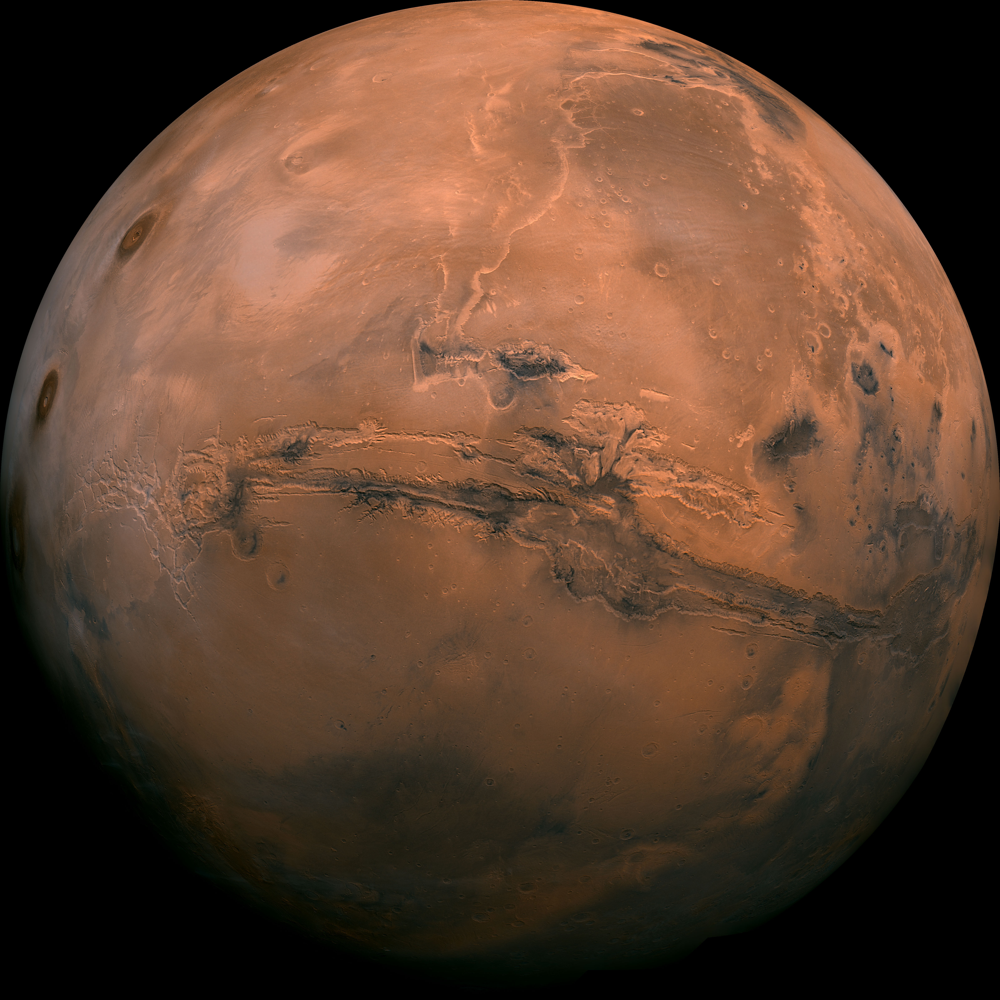

| Mars is the fourth planet from the Sun. It is also known as the "Red Planet", for its orange-red appearance.[22][23] Mars is a desert-like rocky planet with a tenuous atmosphere that is primarily carbon dioxide (CO2). At the average surface level the atmospheric pressure is a few thousandths of Earth's, atmospheric temperature ranges from −153 to 20 °C (−243 to 68 °F),[24] and cosmic radiation is high. Mars retains some water, in the ground as well as thinly in the atmosphere, forming cirrus clouds, fog, frost, larger polar regions of permafrost and ice caps (with seasonal CO2 snow), but no bodies of liquid surface water. Its surface gravity is roughly a third of Earth's or double that of the Moon. Its diameter, 6,779 km (4,212 mi), is about half the Earth's, or twice the Moon's, and its surface area is the size of all the dry land of Earth. |